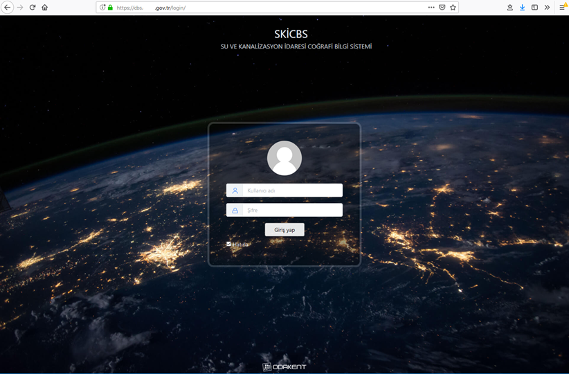
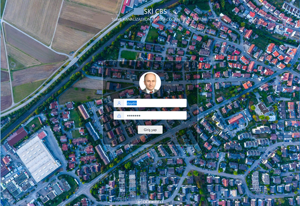

ODAGIS+ Web arayüzüne giriş yapabilmek için her kullanıcının kendisine ait kullanıcı adı ve şifresini ilgili alanlara yazıp "Giriş Yap" butonuna basması gerekmektedir. ODAGIS+ kurumun LDAP (Lightweight Directory Access Protocol - Hafifletilmiş Dizin Erişim Protokolü)'nü kullanabilme yeteneğine sahip olduğundan, kullanıcılar kendi bilgisayarlarını açtıkları kullanıcı adı ve şifreyi kullanarak ODAGIS+ Masüstü, Web ve Mobil arayüzlere giriş yapabilirler. Kullanıcıların Kurumsal Coğrafi Bilgi Sisteminde hangi bilgileri görüntüleyebilecekleri, editleyebilecekleri vb. yetkiler ise ODAGIS+ Admin Panelden kontrol edilmektedir.

 ODAGIS+ Web arayüzüne giriş yaparken kullanıcı adı girildikten sonra şifre metin kutusuna tıklandığında varsa kullanıcının resmi yukarıda görüntülenecektir.
ODAGIS+ Web arayüzüne giriş yaparken kullanıcı adı girildikten sonra şifre metin kutusuna tıklandığında varsa kullanıcının resmi yukarıda görüntülenecektir.
